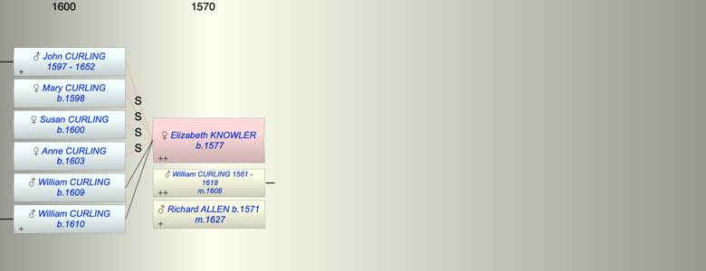
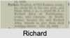

| [Index] |
| Elizabeth KNOWLER (1577 - ) |
|  |
|  |
| b. 1577 |
| m. (1) 23 May 1608 William CURLING (1561 - 1618) at St Laurence |
| m. (2) 09 Jan 1627 Richard ALLEN (1571 - ) at St Mary Magdalen, Canterbury |
| Children (2): |
| William CURLING (1609 - ) |
| William CURLING (1610 - ) |
| Grandchildren (6): |
| John CURLING (1634 - ), William CURLING (1636 - ), Stephen CURLING (1638 - ), Gregory CURLING (1640 - ), Thomas CURLING (1643 - ), Elizabeth CURLING (1646 - 1646) |
| Events in Elizabeth KNOWLER (1577 - )'s life | |||||
| Date | Age | Event | Place | Notes | Src |
| 1577 | Elizabeth KNOWLER was born | ||||
| 23 May 1608 | 31 | Married William CURLING (aged 47) | St Laurence | ex FMP PR no details | |
| 1609 | 32 | Birth of son William CURLING | St Laurence | Note 1 | |
| 1610 | 33 | Birth of son William CURLING | St Laurence | Note 2 | |
| 1618 | 41 | Death of husband William CURLING (aged 57) | Note 3 | ||
| 09 Jan 1627 | 50 | Married Richard ALLEN (aged 56) | St Mary Magdalen, Canterbury | Note 4 | |
| 1652 | 75 | Death of step son John (1) CURLING (aged 55) | St Laurence | Note 5 | |
| Death of son William CURLING | St Laurence | presumably in 1609/10 | |||
| Personal Notes: |
| probably bap St Laurence 28 Dec 1578 daughter of Christopher Knowler ex FMP PR |
| Created on a Mac™ using iFamily for Mac™ on 8 Oct 2023 |